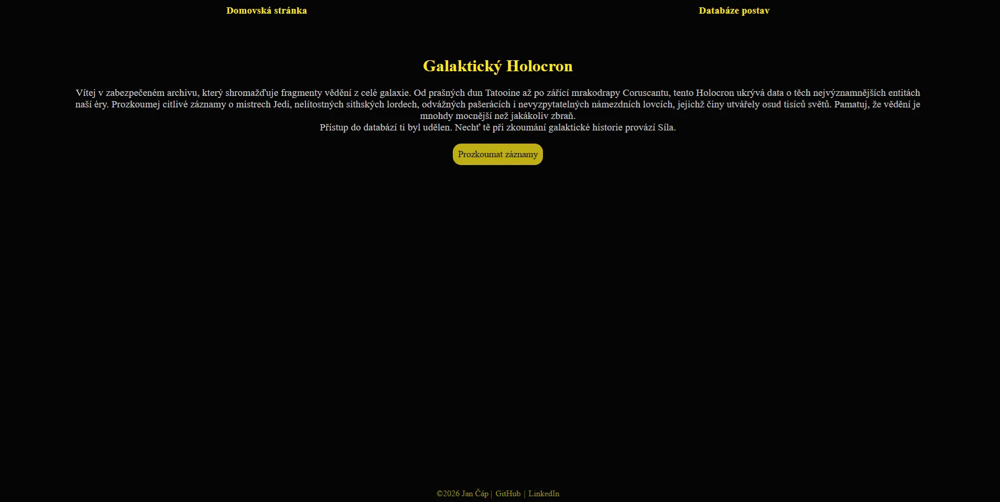
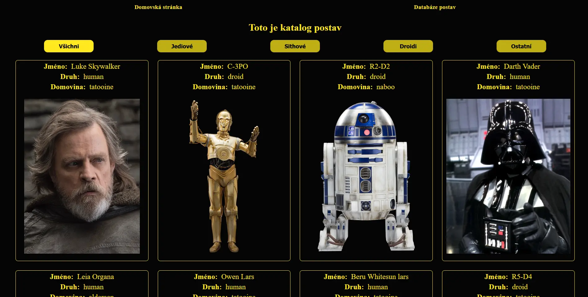
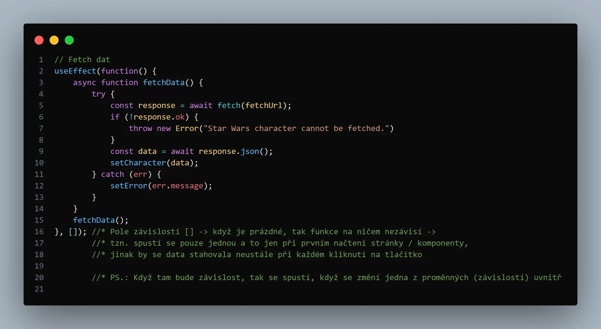
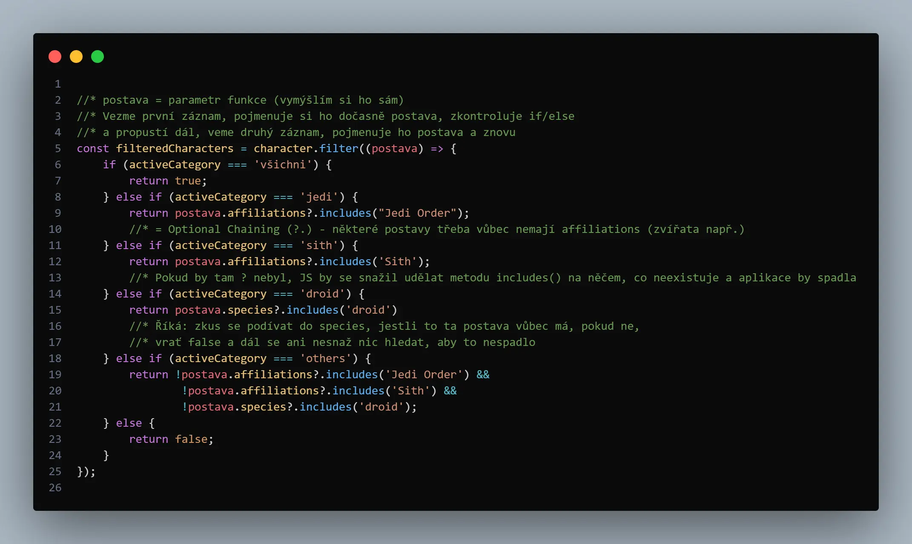
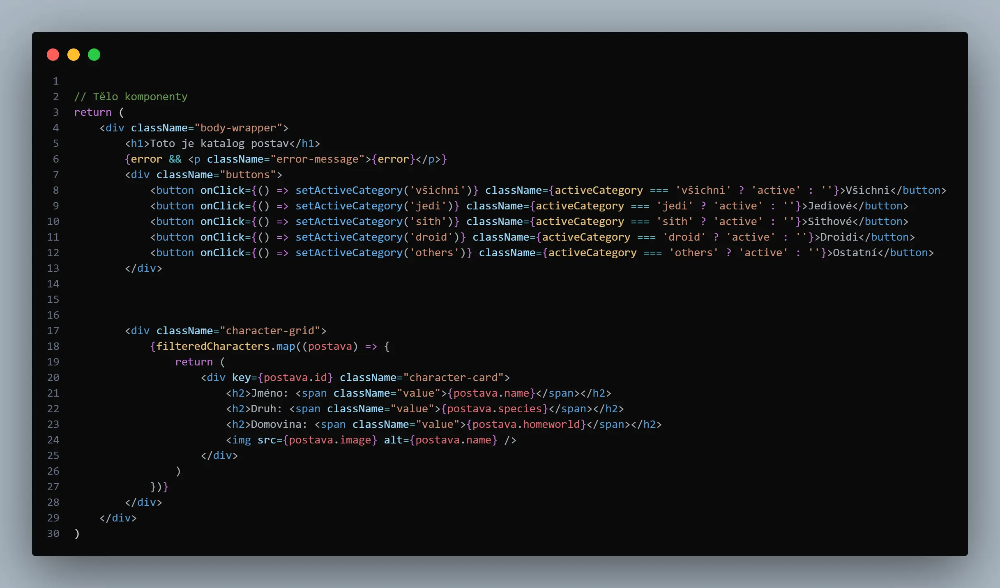

Datum
2026
Menší osobní projekt zaměřený na moderní frontend. Dynamická Single Page Application (SPA) sloužící jako interaktivní katalog postav ze Star Wars, který okamžitě reaguje na filtry uživatele.

Datum
2026
Kategorie
Vývoj Webu
Technologie
HTML, CSS, JavaScript, React
URL
Star Wars Holocron vznikl jako praktický projekt pro ověření znalostí po dokončení kurzu Reactu. Cílem bylo postavit dynamickou webovou aplikaci úplně od nuly a vyzkoušet si, jak funguje moderní frontendový vývoj v praxi, bez použití předpřipravených šablon.
Aplikace slouží jako katalog postav ze Star Wars. Data se stahují z externího zdroje a následně se dynamicky vykreslují na obrazovku. Uživatel může postavy filtrovat podle kategorií (Jedi, Sith, Droid atd.), přičemž web díky architektuře Reactu reaguje naprosto okamžitě, aniž by se musela celá stránka znovu načítat.




Celý projekt je postaven na javascriptové knihovně React. Místo tradičního Vanilla JavaScriptu, kde se manipuluje přímo s DOM elementy, zde logiku řídí React hooky – useState pro ukládání dynamických hodnot (např. aktuálně vybrané kategorie) a useEffect pro asynchronní stahování dat při prvním načtení.
Pro sestavení a chod projektu jsem využil moderní nástroj Vite. Velkou výzvou bylo zprovoznění klientského routování pomocí React Routeru. Musel jsem pochopit, jak správně propojovat komponenty tak, aby se měnil pouze obsah hlavní části stránky, zatímco navigační lišta a patička zůstávají neustále aktivní.
Závěrečnou fází bylo nasazení aplikace na GitHub Pages. Zde jsem si musel v praxi osahat celý "build proces" – od kompilace kódu přes nastavení správných výchozích cest (basename) v konfiguračním souboru Vite až po finální deployment zkompilované verze na produkční server.
Největším přínosem pro mě byla změna vývojářského myšlení. Musel jsem opustit klasický imperativní přístup a naučit se "myslet v komponentách". Pochopil jsem princip, kdy React automaticky překresluje uživatelské rozhraní čistě na základě toho, jak se mění data (stavy) na pozadí, což obrovsky zjednodušuje tvorbu interaktivních webů.
Vývoj Star Wars Holocronu mi ukázal, jak obrovský rozdíl je mezi psaním čistého JavaScriptu a využitím moderního frameworku. Zvládnutí komponentového přístupu a správy stavů mi dalo naprosto nový pohled na to, jak lze stavět rychlá a interaktivní uživatelská rozhraní. Tento projekt mi potvrdil, že se nebojím opustit komfortní zónu tutoriálů a dokážu se poprat s reálnými problémy vývoje od nuly. Ověřil jsem si, že nezáleží jen na napsání kódu, ale hlavně na vytrvalosti dotáhnout aplikaci přes všechny překážky až do úspěšného nasazení, což tvoří skvělý odrazový můstek pro mé budoucí FullStack aplikace.